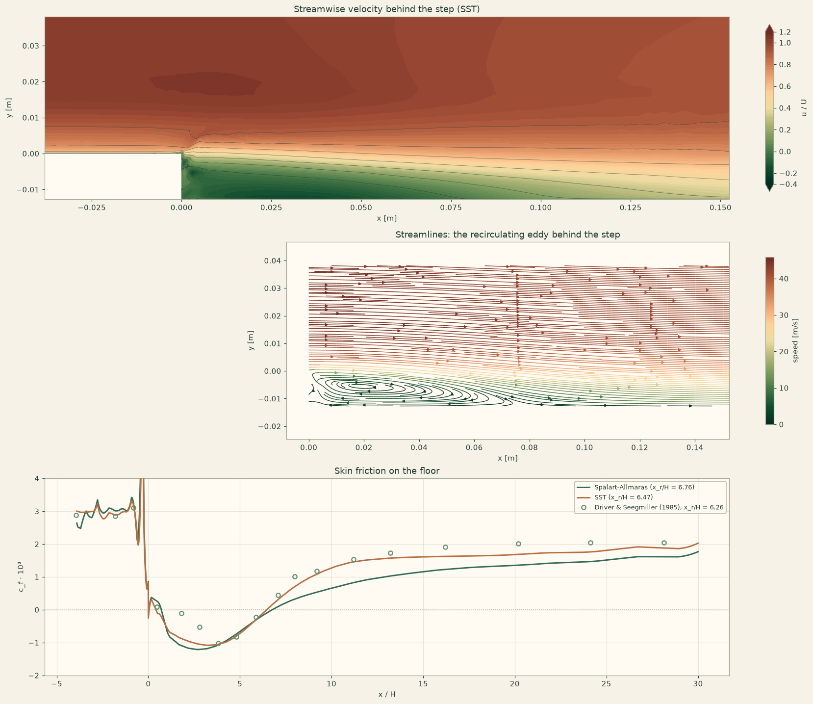
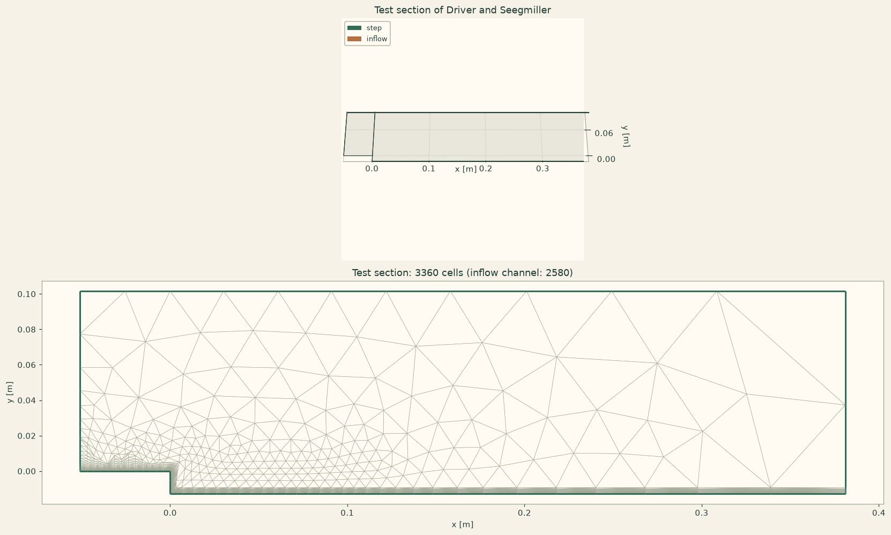

Docs › Examples › Turbulent flow over a backward-facing step
Turbulent flow · 2D
Turbulent flow over a backward-facing step
Air at 44 m/s flows over a 12.7 mm step in the wind-tunnel channel of Driver and Seegmiller (step Reynolds number 36 000): the classical test of how turbulence models handle separation, a free shear layer and reattachment.
Run locally with OneSimulation. The example downloads are free. Running them requires an activated runtime. Runtime Alpha 0.2.1a7 · CPython 3.13 on macOS (Apple Silicon), Ubuntu 22.04 (x86-64), and Windows x64. Installation and activation · View pilot plans. Scope of the reference checks.

What it computes
The test section and the inflow channel are read from STEP files and cut to their mid-planes. OneSimulation first grows the incoming turbulent boundary layer in the inflow channel with the k-omega SST model and takes its profiles where the momentum-thickness Reynolds number reaches the measured 5000; with them as inflow it solves the step flow with the Spalart-Allmaras model and then, started from that velocity field, with SST, both as options of the incompressible flow model on triangle meshes with boundary-layer rows down to y+ below one, pseudo-time continuation and Newton. The script that builds the STEP files comes with the notebook.
What it checks
The SST model reattaches at x_r/H = 6.47 (Driver and Seegmiller 6.26 +- 0.10, +3.3 %), Spalart-Allmaras at 6.76 (+8.0 %), in line with fine-grid results of the NASA Turbulence Modeling Resource; the skin friction follows the measured recirculation minimum of -1.0e-3 within 0.05e-3 (SST) and recovers to 1.88e-3 at x/H = 28 (measured 2.05e-3); the incoming layer has c_f = 3.15e-3 at Re_theta = 5000 (measured 2.88e-3).
Geometry
The notebook starts at the import of the CAD files turbulent_backward_facing_step.step, turbulent_backward_facing_step_inflow.step: STEP (AP242), readable by any CAD program, with the names of the faces that the boundary conditions use. Put them next to the notebook.

The geometry script
The script turbulent_backward_facing_step_geometry.py builds the geometry with the CAD objects of OneSimulation and writes the files. Change a dimension there, run it, and run the notebook again.
"""Geometry of the OneSimulation example "Turbulent flow over a backward-facing step".
Builds two slabs, 0.1 H thick, with the CAD objects of OneSimulation (step height H = 12.7 mm):
* turbulent_backward_facing_step.step: the test section of Driver and Seegmiller (1985), 8 H high
ahead of the step and 9 H behind it, from 4 H upstream of the step edge (at the origin) to 30 H
behind it; faces inflow, outflow, top, floor (upstream wall), step and bottom (downstream wall);
* turbulent_backward_facing_step_inflow.step: the 8 H high inflow channel in which the incoming
boundary layer grows, a 2 H long symmetry plane (lead) and then 100 H of floor; faces inflow,
outflow, top, lead and floor.
The example computes on the mid-planes of both.
"""
from onesim.cad.d3 import Box
H = 0.0127
plane = (
lambda face, axis, value: face.kind == "plane"
and abs(face.center[axis] - value) < 1e-9
)
upstream = Box(length=4 * H, width=8 * H, height=0.1 * H, origin=(-4 * H, 0.0, 0.0))
downstream = Box(length=30 * H, width=9 * H, height=0.1 * H, origin=(0.0, -H, 0.0))
channel = upstream | downstream
channel = channel.grouped(
inflow=channel.select(faces=lambda face: plane(face, 0, -4 * H)),
outflow=channel.select(faces=lambda face: plane(face, 0, 30 * H)),
top=channel.select(faces=lambda face: plane(face, 1, 8 * H)),
floor=channel.select(faces=lambda face: plane(face, 1, 0.0) and face.center[0] < 0),
step=channel.select(faces=lambda face: plane(face, 0, 0.0) and face.center[1] < 0),
bottom=channel.select(faces=lambda face: plane(face, 1, -H)),
)
channel.save("turbulent_backward_facing_step.step")
lead = Box(length=2 * H, width=8 * H, height=0.1 * H, origin=(-2 * H, 0.0, 0.0))
plate = Box(length=100 * H, width=8 * H, height=0.1 * H, origin=(0.0, 0.0, 0.0))
inflow = lead | plate
inflow = inflow.grouped(
inflow=inflow.select(faces=lambda face: plane(face, 0, -2 * H)),
outflow=inflow.select(faces=lambda face: plane(face, 0, 100 * H)),
top=inflow.select(faces=lambda face: plane(face, 1, 8 * H)),
lead=inflow.select(faces=lambda face: plane(face, 1, 0.0) and face.center[0] < 0),
floor=inflow.select(faces=lambda face: plane(face, 1, 0.0) and face.center[0] > 0),
)
inflow.save("turbulent_backward_facing_step_inflow.step")The notebook
The complete notebook, cell by cell. Run it to produce the figures and the comparison printout.
A turbulent boundary layer runs along the floor of a channel until the floor drops by the step height \(H\). The flow separates at the edge, a free shear layer spreads into the deeper channel and reattaches to the new floor at the distance \(x_r\); underneath lies a large recirculating eddy. The reattachment length is the classical test of how a turbulence model handles separation, a free shear layer and recovery.
Driver and Seegmiller (1985) measured this flow in a channel of height \(8H\) ahead of the step and \(9H\) behind it (expansion ratio 1.125), \(H=12.7\) mm, at a reference speed \(U=44.2\) m/s, so that \(Re_H=UH/\nu=36\,000\); four step heights ahead of the edge the boundary layer had the momentum thickness Reynolds number \(Re_\theta\approx5000\) and the skin friction \(c_f=2.88\cdot10^{-3}\).
Two CAD files come from turbulent_backward_facing_step_geometry.py: the inflow channel turbulent_backward_facing_step_inflow.step (8 H high, 100 H of floor behind a short symmetry plane) and the test section turbulent_backward_facing_step.step (from 4 H ahead of the step to 30 H behind it). In the inflow channel the boundary layer grows on the floor; at the station where \(Re_\theta=5000\) its profiles become the inflow of the test section.
The mean flow obeys the Reynolds-averaged Navier-Stokes equations with an eddy viscosity \(\mu_t\):
The turbulence model is an exchangeable option of the flow model. Menter's shear-stress transport (SST) model transports \(k\) and \(\omega\) with \(\mu_t=\rho a_1 k/\max(a_1\omega, SF_2)\); the Spalart-Allmaras model transports one modified eddy viscosity \(\tilde\nu\). The step flow is solved with Spalart-Allmaras first, which converges from a rough guess, and its velocity starts the SST solution.
| side | inflow channel | test section |
|---|---|---|
inflow | \(u=U\); intensity 1 %, \(\mu_t/\mu=1\) | profiles of the inflow channel at \(Re_\theta=5000\) |
floor, step, bottom | no slip, resolved viscous sublayer | same |
lead, top | symmetry | symmetry (top) |
outflow | traction free | traction free |
Reference. D. M. Driver and H. L. Seegmiller, "Features of a reattaching turbulent shear layer in divergent channel flow", AIAA J. 23, 163-171 (1985): reattachment at \(x_r/H=6.26\pm0.10\) and the skin friction on the floor (table below, \(c_f\) based on the centre speed at \(x=-4H\)). On fine grids the NASA Turbulence Modeling Resource (case 2DBFS) reports \(x_r/H\approx6.1\) for Spalart-Allmaras and \(6.4\) for SST.
import numpy as np
from onesim.cad.exchange import load
from onesim.materials import NewtonianFluid
from onesim.meshing import BoundaryLayers, TriangularMesher
from onesim.numerics import Numerics
from onesim.numerics.fem import FiniteElement, TaylorHood
from onesim.numerics.linear import SparseDirect
from onesim.numerics.nonlinear import Newton
from onesim.physics.hydrodynamics import (
FixedVelocity,
FlowTraction,
FreeSlipLaw,
IncompressibleNavierStokes,
InflowTurbulence,
KOmegaSST,
NoSlipWall,
SpalartAllmaras,
TurbulentInflow,
WallShear,
)
from onesim.simulation import Problem, Simulation
from onesim.visualization import plots, theme
theme.set()
measured = np.array(
[
(-3.956, 2.88),
(-1.804, 2.85),
(-0.804, 3.11),
(0.484, 0.09),
(1.804, -0.11),
(2.804, -0.52),
(3.804, -1.02),
(4.804, -0.82),
(5.882, -0.22),
(7.090, 0.45),
(7.978, 1.02),
(9.196, 1.18),
(11.196, 1.54),
(13.196, 1.73),
(16.196, 1.91),
(20.196, 2.02),
(24.136, 2.04),
(28.130, 2.05),
]
)Geometry and mesh
Both slabs are cut at their mid-planes. Thirty-two rows of flat cells line the walls, the first 6 µm high (\(y^+\approx0.7\)), growing by 25 % per row on the floor ahead of the step, so that they hold the whole incoming boundary layer, and by 15 % on the step and the floor behind it. The triangles are finest (0.3 H) along the shear layer behind the step edge; the mesh is deliberately coarse, to keep the run short.
H, speed = 0.0127, 44.2
part, feed_part = load("turbulent_backward_facing_step.step"), load(
"turbulent_backward_facing_step_inflow.step"
)
channel = part.section((0, 0, 1), origin=(0, 0, part.size[2] / 2))
feed = feed_part.section((0, 0, 1), origin=(0, 0, feed_part.size[2] / 2))
faces, feed_faces = channel.boundaries, feed.boundaries
feed_mesh = TriangularMesher(
target_size=0.24,
size_field=lambda p: np.clip(
0.008 + 0.06 * np.abs(p[:, 0]) + 0.2 * p[:, 1], 0.008, 0.24
),
boundary_layers=(
BoundaryLayers(
walls=feed_faces.floor, count=32, first_height=6e-6, growth=1.25
),
),
).generate(feed)
mesh = TriangularMesher(
target_size=6 * H,
minimum_size=0.3 * H,
size_field=lambda p: 3
* H
* np.clip(
0.1 + 0.1 * np.abs(p[:, 1]) / H + 0.05 * np.maximum(p[:, 0] - 8 * H, 0) / H,
0.1,
1.5,
),
boundary_layers=(
BoundaryLayers(walls=faces.floor, count=32, first_height=6e-6, growth=1.25),
BoundaryLayers(
walls=faces.step | faces.bottom, count=32, first_height=6e-6, growth=1.15
),
),
).generate(channel)
fig = plots.figure(layout=[["geometry"], ["mesh"]], size=(15, 9))
plots.geometry(
part,
selection={"step": part.boundaries.step, "inflow": part.boundaries.inflow},
labels=False,
camera=plots.Camera(elevation=50, azimuth=-90),
title="Test section of Driver and Seegmiller",
ax=fig["geometry"],
)
plots.mesh(
mesh,
groups=("all",),
legend=False,
title=f"Test section: {mesh.cell_count} cells (inflow channel: {feed_mesh.cell_count})",
ax=fig["mesh"],
)
plots.show()The incoming boundary layer
turbulence=KOmegaSST(...) adds \(k\), \(\omega\) and \(\mu_t\) to the incompressible Navier-Stokes equations; the walls, inflow and symmetry planes of the flow set their boundary conditions. The steady state is reached by pseudo-time continuation and finished by Newton. The station is where the momentum thickness Reynolds number \(Re_\theta=U_e\theta/\nu\) reaches the measured 5000.
air = NewtonianFluid(density=1.2, dynamic_viscosity=1.2 * speed * H / 36000)
nu = air.dynamic_viscosity / air.density
solver = Newton(
linear_solver=SparseDirect(), absolute_tolerance=1e-8, maximum_iterations=10
)
feed_model = IncompressibleNavierStokes(
domain=feed.domain(),
material=air,
turbulence=KOmegaSST(inflow=InflowTurbulence(intensity=0.01, viscosity_ratio=1.0)),
)
feed_problem = Problem(
name="Inflow channel",
geometry=feed,
physics=(feed_model,),
boundary_conditions=(
FixedVelocity(
boundary=feed_faces.inflow, physics=feed_model, value=(speed, 0.0)
),
NoSlipWall(boundary=feed_faces.floor, physics=feed_model),
WallShear(
boundary=feed_faces.lead | feed_faces.top,
physics=feed_model,
law=FreeSlipLaw(),
),
FlowTraction(boundary=feed_faces.outflow, physics=feed_model, value=(0.0, 0.0)),
),
)
feed_result = Simulation(
problem=feed_problem,
mesh=feed_mesh,
numerics=Numerics(
spatial=FiniteElement(element=TaylorHood()),
initial_guess={feed_model.velocity: (speed, 0.0)},
nonlinear_solver=solver,
),
).solve_stationary()
feed_velocity = feed_result.field(feed_model.velocity)
heights, stations = np.linspace(0, 8 * H, 3201), np.linspace(20, 95, 151) * H
profiles = [
feed_velocity.evaluate(np.column_stack((0 * heights + s, heights)))[:, 0]
for s in stations
]
edge = [heights <= heights[np.argmax(u > 0.995 * u.max())] for u in profiles]
momentum = [
u.max() * np.trapezoid((u / u.max() * (1 - u / u.max()))[m], heights[m]) / nu
for u, m in zip(profiles, edge)
]
station = float(np.interp(5000.0, momentum, stations))
wall_friction = (
2 * nu * feed_velocity.evaluate(np.array([[station, 2e-6]]))[0, 0] / 2e-6 / speed**2
)
print(
f"Re_theta = 5000 at x = {station / H:.1f} H of the inflow channel; there c_f = {1e3 * wall_friction:.2f}e-3 (measured 2.88e-3)"
)The step flow
The profiles at that station are the inflow of the test section: FixedVelocity and TurbulentInflow(profile=...) take any function of the coordinates, here the solved fields (for Spalart-Allmaras the kinematic eddy viscosity \(\nu_t=\mu_t/\rho\)). The incoming velocity profile, shifted down by one step height behind the edge, is the starting guess of the Spalart-Allmaras solution; its velocity field starts the SST solution.
at = lambda field, y: field.evaluate(np.column_stack((0 * y + station, y)))
walls = faces.floor | faces.step | faces.bottom
sa_model = IncompressibleNavierStokes(
domain=channel.domain(), material=air, turbulence=SpalartAllmaras()
)
sa_problem = Problem(
name="Turbulent backward-facing step, Spalart-Allmaras",
geometry=channel,
physics=(sa_model,),
boundary_conditions=(
FixedVelocity(
boundary=faces.inflow,
physics=sa_model,
value=lambda y: at(feed_velocity, y),
),
TurbulentInflow(
boundary=faces.inflow,
physics=sa_model,
profile={
sa_model.modified_turbulent_viscosity: lambda y: at(
feed_result.field(feed_model.eddy_viscosity), y
)
/ air.density
},
),
NoSlipWall(boundary=walls, physics=sa_model),
WallShear(boundary=faces.top, physics=sa_model, law=FreeSlipLaw()),
FlowTraction(boundary=faces.outflow, physics=sa_model, value=(0.0, 0.0)),
),
)
guess = lambda x, y: np.column_stack(
(at(feed_velocity, np.where(x > 0, (y + H) * 8 / 9, np.maximum(y, 0)))[:, 0], 0 * y)
)
sa_result = Simulation(
problem=sa_problem,
mesh=mesh,
numerics=Numerics(
spatial=FiniteElement(element=TaylorHood()),
initial_guess={sa_model.velocity: guess},
nonlinear_solver=solver,
),
).solve_stationary()
sst_model = IncompressibleNavierStokes(
domain=channel.domain(), material=air, turbulence=KOmegaSST()
)
sst_problem = Problem(
name="Turbulent backward-facing step, SST",
geometry=channel,
physics=(sst_model,),
boundary_conditions=(
FixedVelocity(
boundary=faces.inflow,
physics=sst_model,
value=lambda y: at(feed_velocity, y),
),
TurbulentInflow(
boundary=faces.inflow,
physics=sst_model,
profile={
sst_model.turbulent_kinetic_energy: lambda y: at(
feed_result.field(feed_model.turbulent_kinetic_energy), y
),
sst_model.specific_dissipation_rate: lambda y: at(
feed_result.field(feed_model.specific_dissipation_rate), y
),
},
),
NoSlipWall(boundary=walls, physics=sst_model),
WallShear(boundary=faces.top, physics=sst_model, law=FreeSlipLaw()),
FlowTraction(boundary=faces.outflow, physics=sst_model, value=(0.0, 0.0)),
),
)
sa_velocity = sa_result.field(sa_model.velocity)
sst_result = Simulation(
problem=sst_problem,
mesh=mesh,
numerics=Numerics(
spatial=FiniteElement(element=TaylorHood()),
initial_guess={
sst_model.velocity: lambda x, y: sa_velocity.evaluate(
np.column_stack((x, y))
)
},
nonlinear_solver=solver,
),
).solve_stationary()Results
The flow reattaches where the velocity just above the bottom wall turns from backward to forward. The skin friction \(c_f=2\mu\,u(y_w+\Delta)/\Delta/(\rho U_c^2)\) is read 2 µm above the walls and referred to the centre speed \(U_c\) at \(x=-4H\), as in the measurement.
x = np.linspace(-3.9, 30, 6800) * H
wall = np.where(x < 0, 0.0, -H)
behind = x > 0
summary = {}
for name, model, result in (
("Spalart-Allmaras", sa_model, sa_result),
("SST", sst_model, sst_result),
):
velocity = result.field(model.velocity)
near = velocity.evaluate(np.column_stack((x, wall + 2e-6)))[:, 0]
centre = velocity.evaluate(np.array([[-4 * H, 4 * H]]))[0, 0]
reattachment = (
x[behind][np.flatnonzero((near[behind][:-1] < 0) & (near[behind][1:] >= 0))][-1]
/ H
)
summary[name] = (
reattachment,
2 * air.dynamic_viscosity * near / 2e-6 / (air.density * centre**2),
)
print(
f"{name:17s} reattachment x_r/H = {reattachment:.2f} (Driver & Seegmiller 6.26 ± 0.10, deviation {100 * (reattachment / 6.26 - 1):+.1f} %)"
)
print("\n x/H c_f·10³: Spalart-Allmaras SST measured")
for position, value in measured[[0, 1, 2, 5, 6, 9, 11, 13, 15, 17]]:
print(
f"{position:7.2f} {1e3 * np.interp(position * H, x, summary['Spalart-Allmaras'][1]):22.2f} {1e3 * np.interp(position * H, x, summary['SST'][1]):8.2f} {value:10.2f}"
)Figure
Streamwise velocity and streamlines of the SST solution behind the step, and the skin friction along the floor of both models with the measurement.
velocity = sst_result.field(sst_model.velocity)
grid_x, grid_y = np.linspace(0.0, 12 * H, 241), np.linspace(-H, 3 * H, 81)
samples = velocity.evaluate(np.array([[a, b] for a in grid_x for b in grid_y])).reshape(
len(grid_x), len(grid_y), 2
)
fig = plots.figure(layout=[["speed"], ["streamlines"], ["friction"]], size=(15, 13))
plots.surface(
velocity,
component=lambda u, position: u[:, 0] / speed,
limits=(-0.3, 1.1),
contours=8,
subdivisions=2,
xlimits=(-3 * H, 12 * H),
ylimits=(-H, 3 * H),
aspect="equal",
label="u / U",
title="Streamwise velocity behind the step (SST)",
ax=fig["speed"],
)
plots.streamlines(
grid_x,
grid_y,
samples[..., 0],
samples[..., 1],
density=2.5,
label="speed [m/s]",
title="Streamlines: the recirculating eddy behind the step",
ax=fig["streamlines"],
)
plots.line(
y={
f"{name} (x_r/H = {value[0]:.2f})": (x / H, 1e3 * value[1])
for name, value in summary.items()
},
points={
"Driver & Seegmiller (1985), x_r/H = 6.26": (measured[:, 0], measured[:, 1])
},
hlines=[0.0],
xlabel="x / H",
ylabel="c_f · 10³",
ylimits=(-2.0, 4.0),
title="Skin friction on the floor",
ax=fig["friction"],
)
plots.show()Going further
KEpsilon(wall_treatment=WallFunctions(y_plus=30)) with a coarser wall mesh gives the standard k-epsilon model, known to underpredict the reattachment length. Finer triangles along the shear layer and behind reattachment sharpen the recovery of the skin friction.